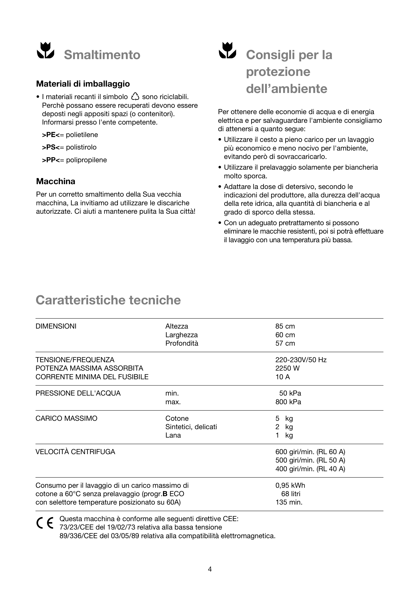
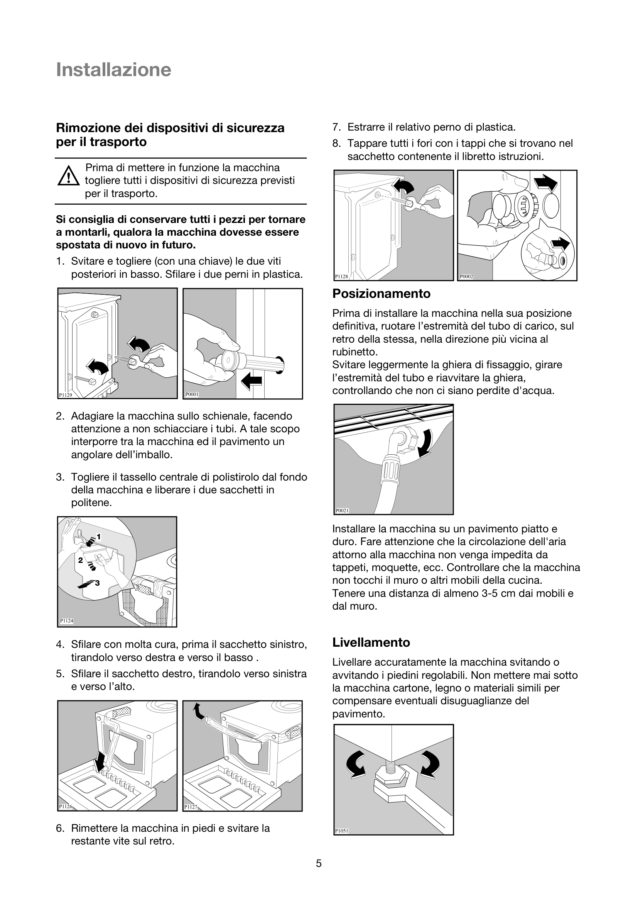
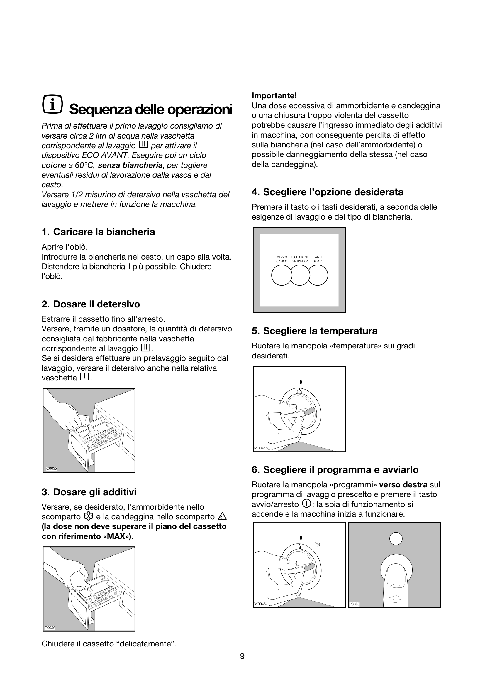

Sicurezza
Leggere attentamente le istruzioni prima dell'installazione e del primo utilizzo. Conservare il manuale per future consultazioni.
Installazione
L'installazione deve essere eseguita da personale qualificato. Posizionare la lavatrice su una superficie piana e stabile.
Pannello Comandi

La pulsantiera e la manopola selettrice consentono di impostare il programma desiderato e le opzioni di lavaggio.
Primo Ciclo
Prima del primo lavaggio con biancheria, eseguire un ciclo a vuoto per pulire l'interno della macchina.
Programmi di Lavaggio
| Programma | Temp. | Giri | Durata | Carico max |
|---|---|---|---|---|
| Cotone | 40–90 °C | 1200 rpm | 110–165 min | 7 kg |
| Cotone Eco | 20–60 °C | 1200 rpm | 159–205 min | 7 kg |
| Sintetici | 40–60 °C | 900 rpm | 75–100 min | 3 kg |
| Delicati | 30–40 °C | 600 rpm | 55–80 min | 2 kg |
| Lana | 30–40 °C | 600 rpm | 45–60 min | 1.5 kg |
| Rapido 30' | 30 °C | 800 rpm | 30 min | 2 kg |
Programma Cotone
Il programma Cotone è ideale per biancheria resistente al calore (lenzuola, asciugamani, biancheria intima).
| Opzione | 40 °C | 60 °C | 90 °C |
|---|---|---|---|
| Durata | 110 min | 130 min | 165 min |
| Acqua (L) | 59 | 64 | 72 |
| Energia (kWh) | 0.65 | 1.05 | 1.85 |

Programma Delicati
Per capi in tessuti sintetici leggeri, misti e seta. Centrifuga a velocità ridotta per proteggere i tessuti.
| Opzione | 30 °C | 40 °C |
|---|---|---|
| Durata | 55 min | 80 min |
| Acqua (L) | 50 | 55 |
| Energia (kWh) | 0.35 | 0.55 |
Consigli di Lavaggio
Simboli di Manutenzione
Guida alle Macchie
| Macchia | Trattamento | Temp. |
|---|---|---|
| Vino rosso | Immergere in acqua fredda, applicare sale o aceto bianco | 40 °C |
| Erba | Trattare con alcool denaturato, poi lavare con smacchiatore ossigenato | 60 °C |
| Sangue | Sciacquare immediatamente in acqua fredda, non usare acqua calda | 30 °C |
| Grasso/Olio | Applicare talco o detersivo liquido, lasciare agire 15 min | 40 °C |
| Caffè/Tè | Immergere in acqua tiepida con bicarbonato, poi lavaggio normale | 60 °C |
| Cioccolato | Spazzolare via il secco, pretrattare con detersivo liquido | 40 °C |
Durezza dell'Acqua
La durezza dell'acqua influisce sul consumo di detersivo. Regolare il dosaggio in base alla scala di durezza.
| Livello | °dH | mmol/L | Detersivo |
|---|---|---|---|
| Morbida | 0–8 | 0–1.4 | Ridurre del 20% |
| Media | 9–14 | 1.5–2.5 | Dosaggio normale |
| Media | 15–21 | 2.6–3.7 | Dosaggio normale |
| Molto dura | >21 | >3.7 | Aumentare del 20% |
Pulizia
Manutenzione

Controllare periodicamente il tubo di carico per eventuali crepe o perdite. Sostituire il tubo ogni 5 anni.
Per la manutenzione straordinaria contattare un centro assistenza autorizzato.
Ricambi Originali
Ricambi originali Electrolux per Rex RL40A (codice PNC 91478021300). Disponibili su shop.electrolux.it.
| Ricambio | Codice | Prezzo | ||
|---|---|---|---|---|
| bullone, ammortizzatore 14,3x72 | 1327804017 | € 5,80 € 4,64 | Acquista | |
| Sigillo del filtro della lavatrice | 1260616014 | € 12,99 € 10,40 | Acquista | |
| Cassetto detersivo, parete divi | 140033852041 | € 45,99 € 39,10 | Acquista | |
| Copri filtro pompa della lavatrice | 1320711003 | € 6,99 € 5,95 | Acquista | |
| Anello di blocco della guarnizione | 1320552001 | € 8,99 € 7,20 | Acquista | |
| Molla di sicurezza per oblò | 1240673135 | € 6,09 € 4,88 | Acquista | |
| Guarnizione in gomma per l'oblò | 1321091025 | € 51,00 € 40,80 | Acquista | |
| Vite per motore | 1240222016 | € 3,09 € 2,48 | Acquista | |
| Guarnizione vasca della lavatrice | 1240159036 | € 25,99 € 20,80 | Acquista | |
| Piede di sospensione per lavatrice | 1322553015 | € 20,00 € 16,00 | Acquista | |
| Elemento riscaldante con sensore | 8581325347004 | € 36,99 € 29,60 | Acquista | |
| Filtro per pompa della lavatrice | 1321368118 | € 12,99 € 10,40 | Acquista | |
| Protezione dispositivo sicurezza oblò | 1321444208 | € 5,69 € 4,84 | Acquista | |
| Tubo di uscita per l'acqua | 1320365057 | € 15,99 € 12,80 | Acquista | |
| Battitore per cestello della lavatrice | 50252271007 | € 20,98 | Acquista | |
| Fascetta, d=59mm | 1246646010 | € 2,59 | Acquista | |
| Vite per fondovasca per lavatrice | 1322290105 | € 3,09 | Acquista | |
| Molla di blocco per elemento riscaldante | 1247825100 | € 6,99 | Acquista | |
| Gruppo cerniera per l'oblò | 1323641009 | € 28,99 | Acquista | |
| Cuscinetto per lavatrice | 50246818004 | € 18,00 | Acquista | |
| Vaschetta convogliatore detersivo | 1246246316 | € 55,99 | Acquista | |
| Guarnizione per valvola di ingresso | 1240151025 | € 12,99 | Acquista | |
| Perno per erogatore d'acqua | 1240042000 | € 5,99 | Acquista | |
| Gruppo tubo flessibile di scarico | 1320721044 | € 20,98 | Acquista | |
| Pulsante di sicurezza per oblò | 1320163007 | € 13,99 | Acquista | |
| Vetro per l'oblò della lavatrice | 1260581002 | € 56,99 | Acquista | |
| Estremità per tubo flessibile di scarico | 1242916003 | € 5,59 | Acquista | |
| Gruppo corpo pompa per lavatrice | 1320715269 | € 39,99 | Acquista | |
| Gruppo piastra indicazione temperatura | 1320581018 | € 19,00 | Acquista | |
| Vite cuscinetto | 1240220200 | € 3,18 | Acquista | |
| Anello collegamento interno guarnizione porta | 1240477024 | € 8,99 | Acquista | |
| Tubo ingresso acqua (1500 mm) | 1325115911 | € 34,99 | Acquista | |
| Camera d'aria a 1 via per lavatrice | 1243071105 | € 19,00 | Acquista | |
| Assorbitore d'urto per lavatrice | 3794303010 | € 20,98 | Acquista | |
| Molla di sospensione per vasca | 1240195709 | Esaurito | ||
| Guarnizione cuscinetto cestello | 50063248004 | € 14,99 | Acquista | |
| Elettrovalvola | 8583792260439 | € 30,99 | Acquista |
Dati Tecnici
| Parametro | Valore |
|---|---|
| Modello | Rex RL40A |
| PNC | 91478021300 |
| Capacità max | 7 kg |
| Velocità max centrifuga | 1200 rpm |
| Classe energetica | A+++ |
| Tensione | 220–240 V ~ 50 Hz |
| Corrente | 10 A |
| Potenza max assorbita | 2200 W |
| Consumo acqua annuo | ~9500 L |
| Consumo energia annuo | ~175 kWh |
| Pressione acqua | 0.1–1 MPa (1–10 bar) |
| Larghezza | 595 mm |
| Altezza | 850 mm |
| Profondità | 540 mm |
| Peso netto | ~67 kg |
| Lunghezza cavo | 1.5 m |
| Lunghezza tubo carico | 1.2 m |
| Lunghezza tubo scarico | 1.5 m |
| Classe rumorosità | C (76 dB) |
Dall'Esperienza degli Utenti
Consigli pratici raccolti da utenti Rex RL40A per ottimizzare il lavaggio e prolungare la vita della macchina.
Programmi Consigliati
| Utilizzo | Programma | Temp. | Extra |
|---|---|---|---|
| Biancheria letto | Cotone | 60 °C | Prelavaggio |
| Asciugamani | Cotone | 60 °C | Centrifuga max |
| Camicie | Sintetici | 40 °C | Centrifuga ridotta |
| Lana | Lana | 30 °C | Centrifuga ridotta |
| Poco sporco | Rapido 30' | 30 °C | Carico ridotto |
| Misto quotidiano | Misto | 40 °C | — |
Detersivo: Dosaggio Consigliato
| Durezza | Detersivo polvere | Detersivo liquido |
|---|---|---|
| Morbida (0–8 °dH) | 80 ml | 60 ml |
| Media (9–21 °dH) | 100 ml | 75 ml |
| Molto dura (>21 °dH) | 120 ml | 90 ml |
Marche Detersivo Più Usate
Secondo l'esperienza degli utenti, le marche più efficaci con la RL40A sono: Bio Presto (polvere e liquido), Dash (capsule), Neutro (ipoallergenico), e Sapone di Marsiglia (tradizionale).
Anticalcare Consigliati
Per la manutenzione dell'RL40A, gli utenti raccomandano l'uso di anticalcare Bio Presto o Cillit Bang. In alternativa, acido citrico diluito (100 g in 1 L d'acqua) una volta ogni 3 mesi.
Pulizia Periodica
| Operazione | Ogni |
|---|---|
| Pulizia filtro pompa | 1–2 mesi |
| Pulizia vaschetta detersivo | 2 mesi |
| Pulizia gomma oblò | Settimanale |
| Ciclo autopulizia (90 °C) | 1 mese |
| Trattamento anticalcare | 3 mesi |
Errori Comuni
| Errore | Causa | Soluzione |
|---|---|---|
| E10 | Mancanza acqua | Aprire rubinetto, controllare tubo |
| E20 | Scarico ostruito | Pulire filtro pompa |
| E30 | Sportello non chiuso | Chiudere correttamente lo sportello |
| E40 | Sovraccarico | Ridurre il carico di biancheria |